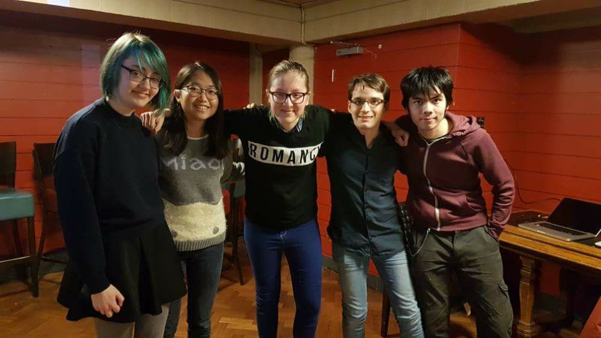

Edinburgh Uni's Game Development Society
We want to create a welcoming environment for seasoned game developers and beginners alike. We host events that are part-talks part-socials, during which you can share your ideas in a stimulating environment.
All our events are free, open to non-students and do not require membership, so do come along if you are curious!
SOCIALS: MICROTALKS, WORKSHOPS & SHOWCASE
MONTHLY ON SATURDAYS
Talk to people about games, come by if you are just curious, listen (or give!) short talks, learn about gamedev and play or receive feedback on your games. Non-members and non-students welcome!
GAMEJAMS
ONE PER SEMESTER
Challenge yourself and make a game in a day or two! It's a great way to get started and improve your skills.
TOOLS
Twine - easy-to-use tool for interactive fiction creation. Quick tutorial over here!
Construct 2 - programming-free game creation (Windows). Intuitive and great for prototyping
GameMaker - powerful, has its own built-in language. Exports to many platforms
sortingh.at - not sure what tool to use?
itch.io - discover & host your games for free
Indie Game Jams - find out about gamejams
One Game A Month - commit to making one creation each month
Bosca Ceoil - make music
BFXR - make sound effects
FreeSound - royalty-free music
ARTICLES & OTHER
GamesAreForEveryone - list of resources regarding all aspects of gamedev
Kill Screen - video game arts and culture publication
Gaming to cope: how developers are tackling real life - article on personal games creation
We'd love your suggestions to improve this list!
Edinburgh Indies - monthly meetup, every first Thursday
Game Dev Edinburgh - bimonthly meetup, every second Tuesday
IGDA Scotland - talks, events & resources all over Scotland
EdIndies - weekly co-working meetup in Summerhall
GamesAreForEveryone - drinks, music & selection of interesting games

President: Vaida Plankyte
Secretary: Tatsuya Haddow
Treasurer: Charles Sharples
Events Coordinator: Yu Jo Tseng
Outreach & Social Media Coordinator: Katie Worton
GameDevSoc follows EUSA's Safe Space Policy.
SPONSORED BY: